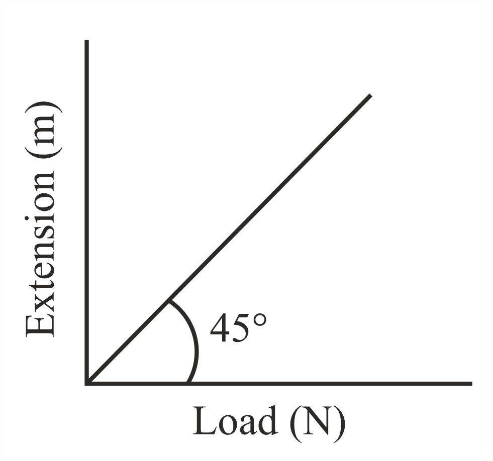

⚡ Properties of Matter
82
Total Questions
5
Years
4
Clusters
Question Clusters
PHY-PROPOF-SURFACE_TENSION_CAPILLARY
Properties of Matter: Surface Tension, Excess Pressure & Capillarity
PHY-PROPOF-ELASTICITY_HOOKE
Properties of Matter: Elasticity, Stress, Strain & Young's Modulus
PHY-PROPOF-VISCOSITY_STOKES_TERMINAL
Properties of Matter: Viscosity, Stokes' Law & Terminal Velocity
PHY-PROPOF-HYDROSTATICS_BERNOULLI
Properties of Matter: Fluid Pressure, Continuity & Bernoulli's Principle
Year-wise Frequency
| Year | Questions | Frequency |
|---|---|---|
| 2021 | 21 | |
| 2022 | 10 | |
| 2023 | 27 | |
| 2024 | 23 | |
| 2025 | 1 |
Questions
Showing first 50 of 82 questions.
Q5 (2021 Shift 2)
What will be the nature of flow of water from a circular tap, when its flow rate increased from 0. 18 L (min)−1 to 0. 48 L (min)−1? The radius of the tap and viscosity of water are 0. 5 cm and 10−3 Pa s , respectively. (Density of water : 103 kg m−3 )
PHY-2021-0101-S2-Q005
Q10 (2021 Shift 2)
Two small drops of mercury each of radius R coalesce to form a single large drop. The ratio of total surface energy before and after the change is
PHY-2021-0101-S2-Q010
Q25 (2021 Shift 1)
The area of cross-section of a railway track is 0. 01 m2. The temperature variation is 10 °C. Coefficient of linear expansion of material of track is 10−5 ∘C−1. The energy stored per meter in the track is J m−1. (Young's modulus of material of track is 1011 N m−2 )
Answer:
5PHY-2021-0101-S1-Q025
Q7 (2021 Shift 1)
If 𝑌, 𝐾 and 𝜂 are the values of Young's modulus, bulk modulus and modulus of rigidity of any material respectively. Choose the correct relation for these parameters.
PHY-2021-0101-S1-Q007
Q7 (2021 Shift 1)
Given below are two statements: one is labelled as Assertion A and the other is labelled as Reason R . Assertion : When a rod lying freely is heated, no thermal stress is developed in it. A Reason R : On heating, the length of the rod increases. In the light of the above statements, choose the correct answer from the options given below:
PHY-2021-0101-S1-Q007
Q2 (2021 Shift 1)
Water droplets are coming from an open tap at a particular rate. The spacing between a droplet observed at 4th second after its fall to the next droplet is m. At what rate the droplets are coming from the tap ? (Take 34 . 3 𝑔= 9 . 8 m s-2)
PHY-2021-0101-S1-Q002
Q6 (2021 Shift 1)
Two wires of same length and radius are joined end to end and loaded. The Young's moduli of the materials of the two wires are 𝑌1 and 𝑌2. The combination behaves as a single wire then its Young's modulus is:
PHY-2021-0101-S1-Q006
Q9 (2021 Shift 2)
Two spherical soap bubbles of radii r1 and r2 in vacuum combine under isothermal conditions. The resulting bubble has a radius equal to:
PHY-2021-0101-S2-Q009
Q5 (2021 Shift 1)
Two narrow bores of diameter 5. 0 mm and 8. 0 mm are joined together to form a U− shaped tube open at both ends. If this U− tube contains water, what is the difference in the level of two limbs of the tube. [Take surface tension of water T = 7. 3 × 10−2 N m−1 , angle of contact = 0, g = 10 m s−2 and density of water = 1. 0 × 103 kg m−3]
PHY-2021-0101-S1-Q005
Q24 (2021 Shift 1)
A soap bubble of the radius 3 cm is formed inside another soap bubble of radius, 6 cm . The radius of an equivalent soap bubble that has the same excess pressure as inside the smaller bubble with respect to the atmospheric pressure is____ cm.
Answer:
2PHY-2021-0101-S1-Q024
Q7 (2021 Shift 2)
Two blocks of masses 3 kg and 5 kg are connected by a metal wire going over a smooth pulley. The breaking stress of the metal is 24 × 102 N m−2 . What is the minimum radius of the wire ? π ( take g = 10 m s−2)
PHY-2021-0101-S2-Q007
Q8 (2021 Shift 1)
The normal density of a material is ρ and its bulk modulus of elasticity is K . The magnitude of increase in density of material, when a pressure P is applied uniformly on all sides, will be :
PHY-2021-0101-S1-Q008
Q9 (2021 Shift 1)
A large number of water drops, each of radius r , combine to have a drop of radius R . If the surface tension is T and mechanical equivalent of heat is J , the rise in heat energy per unit volume will be:
PHY-2021-0101-S1-Q009
Q6 (2021 Shift 1)
In Millikan's oil drop experiment, what is viscous force acting on an uncharged drop of radius 2. 0 × 10−5 m and density 1. 2 × 103 kg m−3 ? Take viscosity of liquid = 1. 8 × 10−5 N s m−2. (Neglect buoyancy due to air).
PHY-2021-0101-S1-Q006
Q1 (2021 Shift 2)
Match List- (I) with List- (II) . List- List- (I) (II) a RH (Rydberg constant) i kg m−1 s−1 b h (Planck's constant) ii kg m2 s−1 c μB (Magnetic field energy density) iii m−1 m−1 s−2 d η (coefficient of viscosity) iv kg Choose the most appropriate answer from the options given below:
PHY-2021-0101-S2-Q001
Q3 (2021 Shift 2)
Water drops are falling from a nozzle of a shower onto the floor from a height of 9. 8 m . The drops fall at a regular interval of time. When the first drop strikes the floor, at that instant, the third drop begins to fall. Locate the position of second drop from the floor when the first drop strikes the floor.
PHY-2021-0101-S2-Q003
Q22 (2021 Shift 2)
Wires W1 and W2 are made of same material having the breaking stress of 1. 25 × 109 N m−2. W1 and W2 have cross-sectional area of 10−7 m2 and 10−7 m2 , respectively. Masses of and hang 8 × 4 × 20 kg 10 kg from them as shown in the figure. The maximum mass that can be placed in the pan without breaking the wires is _____ kg (Use g = 10 m s−2)
Answer:
40PHY-2021-0101-S2-Q022
Q22 (2021 Shift 1)
A stone of mass 20 g is projected from a rubber catapult of length 0. 1 m and area of cross section 10−6 m2 stretched by an amount 0. 04 m. The velocity of the projected stone is m s−1. (Young's modulus of rubber = 0. 5 × 109 N m−2 )
Answer:
20PHY-2021-0101-S1-Q022
Q8 (2021 Shift 2)
A raindrop with radius R = 0. 2 mm falls from a cloud at a height h = 2000 m above the ground. Assume that the drop is spherical throughout its fall and the force of buoyance may be neglected, then the terminal speed attained by the raindrop is : [Density of water fw = 1000 kg m−3 and Density of air fa = 1. 2 kg m−3, g = 10 m/s2 Coefficient of viscosity of air = 1. 8 × 10−5N s m−2]
PHY-2021-0101-S2-Q008
Q7 (2021 Shift 1)
A uniform heavy rod of weight 10 kg m s−2, cross-sectional area 100 cm2 and length 20 cm is hanging from a 1011 fixed support. Young modulus of the material of the rod is 2 × N m−2. Neglecting the lateral contraction, find the elongation of rod due to its own weight:
PHY-2021-0101-S1-Q007
Q23 (2021 Shift 1)
When a rubber ball is taken to a depth of _______ m in deep sea, its volume decreases by 0. 5% (The bulk modulus of rubber = 9. 8 × 108 N m−2 Density of sea water = 103 kg m−3 , g = 9. 8 m s−2 )
Answer:
500PHY-2021-0101-S1-Q023
Q7 (2022 Shift 1)
The bulk modulus of a liquid is 3 × 1010 Nm−2 . The pressure required to reduce the volume of liquid by 2% is : 108 m−2 108 m−2
PHY-2022-0101-S1-Q007
Q11 (2022 Shift 1)
A vertical electric field of magnitude 4. 9 × 105 N C−1 just prevents a water droplet of a mass 0. 1 g from falling. The value of charge on the droplet will be : (Given g = 9. 8 m s−2 ) 10−9C 10−9C
PHY-2022-0101-S1-Q011
Q6 (2022 Shift 1)
The terminal velocity 𝑣𝑡 of the spherical rain drop depends on the radius 𝑟 of the spherical rain drop as
PHY-2022-0101-S1-Q006
Q24 (2022 Shift 1)
The velocity of upper layer of water in a river is 36 km h-1. Shearing stress between horizontal layers of water is 10-3 m-2. Depth of the river is _____ m. (Co-efficient of viscosity of water is 10-2 s) N Pa
Answer:
100PHY-2022-0101-S1-Q024
Q24 (2022 Shift 1)
The elastic behaviour of material for linear stress and linear strain, is shown in the figure. The energy density for a linear strain of 5 × 10−4 is _____ kJ m−3 . Assume that material is elastic upto the linear strain of 5 × 10−4 ,

Answer:
25PHY-2022-0101-S1-Q024
Q6 (2022 Shift 2)
If is the density and is coefficient of viscosity of fluid which flows with a speed in the pipe of diameter , p η v d the correct formula for Reynolds number Re is ρv
PHY-2022-0101-S2-Q006
Q8 (2022 Shift 1)
The velocity of a small ball of mass m and density d1 , when dropped in a container filled with glycerine, becomes constant after some time. If the density of glycerine is d2 , then the viscous force acting on the ball, will be
PHY-2022-0101-S1-Q008
Q1 (2022 Shift 1)
Assertion A: Product of Pressure (P) and time (t) has the same dimension as that of coefficient of viscosity. Reason: Coefficient of viscosity Force = Velocity gradient
PHY-2022-0101-S1-Q001
Q6 (2022 Shift 1)
A water drop of diameter is broken into equal droplets. The surface tension of water is m−1 . 2 cm 64 0. 075 N In this process the gain in surface energy will be
PHY-2022-0101-S1-Q006
Q7 (2022 Shift 2)
A water drop of radius 1μm falls in a situation where the effect of buoyant force is negligible. Co-efficient of viscosity of air is 1. 8 × 10−5 N s m−2 and its density is negligible as compared to that of water 106 g m−3 . Terminal velocity of the water drop is (Take acceleration due to gravity = 10 m s−2 )
PHY-2022-0101-S2-Q007
Q1 (2023 Shift 1)
𝑃+ 𝑉2𝑉- 𝑎 𝑏= 𝑅𝑇 represents the equation of state of some gases. Where 𝑃 is the pressure, 𝑉 is the volume, 𝑇 is the temperature and 𝑎, 𝑏, 𝑅 are the constants. The physical quantity, which has dimensional formula as that 𝑏2 of , will be :
PHY-2023-0101-S1-Q001
Q7 (2023 Shift 1)
A mercury drop of radius 10 – 3 m is broken into 125 equal size droplets. Surface tension of mercury is – 1 . The gain in surface energy is: 0 . 45 N m
PHY-2023-0101-S1-Q007
Q23 (2023 Shift 1)
A certain pressure '𝑃' is applied to 1 litre of water and 2 litre of a liquid separately. Water gets compressed to 0 . 01% whereas the liquid gets compressed to 0 . 03%. The ratio of Bulk modulus of water to that of the liquid 3 is 𝑥. The value of 𝑥 is ______.

Answer:
1PHY-2023-0101-S1-Q023
Q8 (2023 Shift 1)
A small ball of mass 𝑀 and density 𝜌 is dropped in a viscous liquid of density 𝜌0. After some time, the ball falls with a constant velocity. What is the viscous force on the ball? 𝜌0 𝜌
PHY-2023-0101-S1-Q008
Q24 (2023 Shift 1)
A steel rod has a radius of 20 mm and a length of 2 . 0 m . A force of 62 . 8 kN stretches it along its length. 1011N 10-5. Young's modulus of steel is 2 . 0 × m-2. The longitudinal strain produced in the wire is _________ ×
Answer:
25PHY-2023-0101-S1-Q024
Q12 (2023 Shift 1)
An air bubble of diameter 6 mm rises steadily through a solution of density 1750 kg m−3 at the rate of 0. 35 cm s−1 . The co-efficient of viscosity of the solution (neglect density of air) is ________ Pas (given, g = 10 m s−2 ).
Answer:
1PHY-2023-0101-S1-Q012
Q27 (2023 Shift 1)
For a nucleus A ZX having mass number A and atomic number Z (bs) A. The surface energy per nucleon = –a1A 2 3 . B. The Coulomb contribution to the binding energy bc = −a2 Z(Z−1) 4 . A 3 C. The volume energy bv = a3A D. Decrease in the binding energy is proportional to surface area. E. While estimating the surface energy, it is assumed that each nucleon interacts with 12 nucleons. ( a1, a2 and are constants) a3 Choose the most appropriate answer from the options given below: (1) B, C, E only (2) C, D only (3) A, B, C, D only (4) B, C only
Answer:
2PHY-2023-0101-S1-Q027
Q1 (2023 Shift 2)
Match List I with List II List I List II A. Torque I. M L−2 T−2 B. Stress II. M L2 T−2 C. Pressure gradient III. M L−1 T−1 Coefficient of D. viscosity IV. M L−1 T−2 Choose the correct answer from the options given below :
PHY-2023-0101-S2-Q001
Q23 (2023 Shift 1)
Two wires each of radius 0 . 2 cm and negligible mass, one made of steel and the other made of brass are loaded as shown in the figure. The elongation of the steel wire is ______10 – 6 m. [Young's modulus for steel 1011 – 2 and – 2] = 2 × N m 𝑔= 10 m s
Answer:
20PHY-2023-0101-S1-Q023
Q10 (2023 Shift 2)
The surface tension of soap solution is 3. 5 × 10−2 N m−1 . The amount of work done required to increase the radius of soap bubble from 10 cm to 20 cm is _____ ×10−4 J . (take = 22 ) π 7
PHY-2023-0101-S2-Q010
Q9 (2023 Shift 1)
Under isothermal condition, the pressure of a gas is given by P = aV –3, where a is a constant and V is the volume of the gas. The bulk modulus at constant temperature is equal to
PHY-2023-0101-S1-Q009
Q1 (2023 Shift 2)
In the equation 𝑋+ 𝑌2[𝑌- 𝑎 𝑏] = 𝑅𝑇, 𝑋 is pressure, 𝑌 is volume, 𝑅 is universal gas constant and 𝑇 is temperature. The physical quantity equivalent to the ratio 𝑎 is: 𝑏
PHY-2023-0101-S2-Q001
Q23 (2023 Shift 1)
There is an air bubble of radius 1. 0 mm in a liquid of surface tension 0. 075 N m–1 and density 1000 kg m–3 at a depth of 10 cm below the free surface. The amount by which the pressure inside the bubble is greater than the atmospheric pressure is _______ Pa(g = 10 m s−2) .
Answer:
1150PHY-2023-0101-S1-Q023
Q6 (2023 Shift 1)
A 100 m long wire having cross-sectional area 6 . 25 × 10-4 m2 and Young's modulus is 1010 N m-2 is subjected to a load of N, then the elongation in the wire will be : 250
PHY-2023-0101-S1-Q006
Q2 (2023 Shift 2)
The frequency (ν) of an oscillating liquid drop may depend upon radius (r) of the drop, density (ρ) of liquid and the surface tension (s) of the liquid as: ν = raρbsc . The values of a, b and c respectively are
PHY-2023-0101-S2-Q002
Q11 (2023 Shift 2)
A spherical ball of radius 1 mm and density 10. 5 g cc−1 is dropped in glycerine of coefficient of viscosity 9. 8 poise and density 1. 5 g cc−1 . Viscous force on the ball when it attains constant velocity is 3696 × 10−x N . The value of x is (Given, g = 9. 8 m s−2 and π = 22 ) 7
PHY-2023-0101-S2-Q011
Q2 (2023 Shift 1)
Match List I with List II List - I List - II A Surface tension I. kg m−1 s−1 B Pressure II. kg m s−1 C Viscosity III. kg m−1 s−2 s−2 D Impulse IV. kg Choose the correct answer from the options given below:
PHY-2023-0101-S1-Q002
Q10 (2023 Shift 1)
As shown in the figure, in an experiment to determine Young's modulus of a wire, the extension-load curve is plotted. The curve is a straight line passing through the origin and makes an angle of 45° with the load axis. The length of wire is 62. 8 cm and its diameter is 4 mm . The Young's modulus is found to be x × 104 N m−2 The value of x is _______.

PHY-2023-0101-S1-Q010
Q1 (2023 Shift 2)
Match List I with List II List List II A Young's Modulus (Y ) I [ML–1 T –1] B Co-efficient of Viscosity (η) II [ML2 T –1] C Planck's Constant (h) III [ML–1 T –2] D Work Function (ϕ) IV [ML2 T–2] Choose the correct answer from the options given below:
PHY-2023-0101-S2-Q001